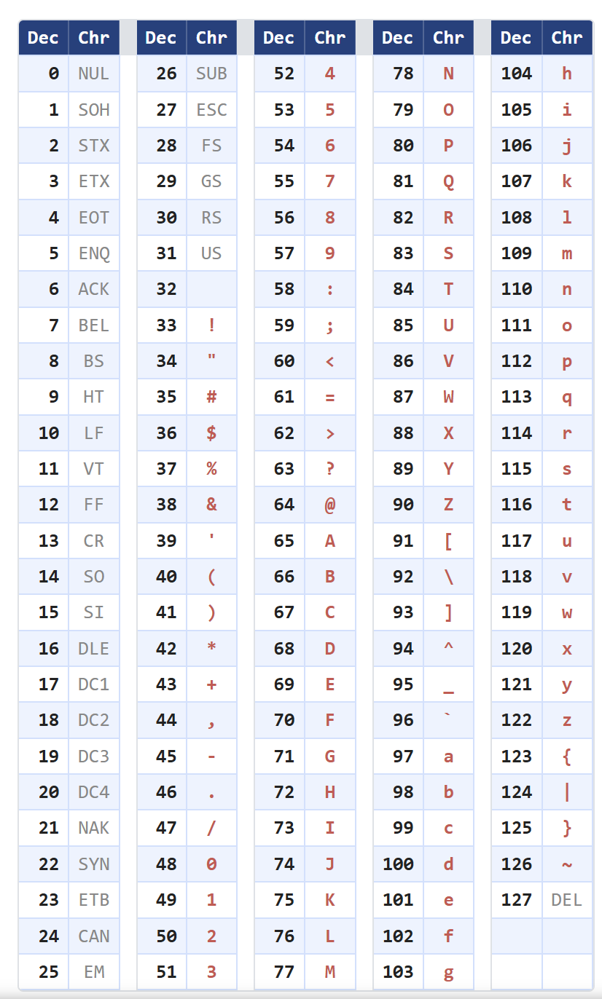
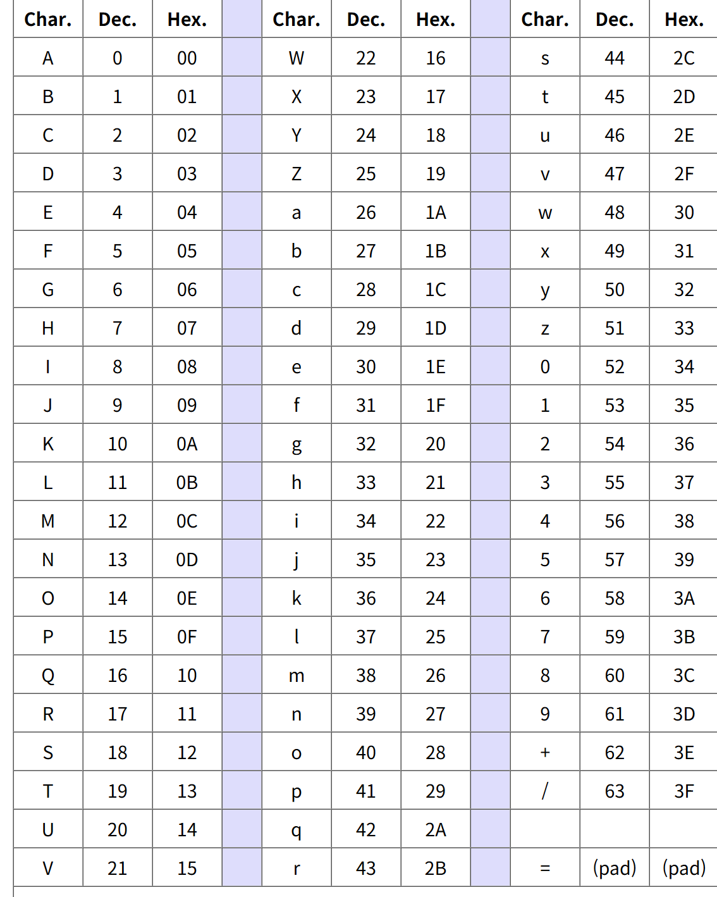

URL 인코딩은 인터넷 주소에 포함될 수 없는 특수문자, 한글, 공백등을 안전한 아스키 문자 형태로 변환하는 기술이다.
URL에 % 기호와 16진수 숫자를 조합하여 표현하기 때문에 퍼센트 코딩이라고도 부른다.
URL은 영문자, 숫자, 일부 특수문자만 사용하도록 하는 표준이 있다. (RFC 3986)
따라서 이 규칙을 벗어나는 한글, 공백, 또는 URL 구조에 영향을 주는 문자를 그대로 주소창에 넣으면 컴퓨터가 주소를 잘못해석하거나 오류를 일으킬 수도 있다.
여기서 주소를 잘못해석한다는것은,
우선 컴퓨터는 웹 주소를 읽을때, 특정 문자들은 주소의 구조를 파악하는 구분자로 정해져 있다.
조금 예를 들어보자면,
다음은 주소창에 쓰이는 특수문자들이다.
/ : 폴더를 구분
? : 데이터의 시작을 알림
&: 데이터들을 구분함
=: 데이터의 이름과 값을 연결
만약 인코딩을 하지않은 상태에서 구글에 Ethernet&IP라고 검색했다면 컴퓨터는 Ethernet&IP를 한단어로 인식하지못하고 Ethernet과 IP를 다른 데이터로 구분해 사용자가 원하는 검색결과를 출력하지 않을것이다.
따라서 웹의 안전성을 위해 URL 인코딩은 필수적이라고 볼 수 있다.
허용되지않은 문자, 인코딩이 필요한 특수문자
:/#[]@!$&'()*+,;=%공백은 다음과 같은 변환을 거친다.
%아스키코드16진수값
공백문자를 예로 들어보겠다.
%공백의 16진수 아스키코드값 = %20
(또는 +기호)
Base64는 텍스트가 아닌 이진 데이터(Binary Data : 이미지, 압축파일, 프로그램 등)를 64개의 아스키코드로 변환하는 기술이다.
64개의 문자에는 알파벳 대소문자, 숫자(0~9), 특수문자 + /, 패딩기호 = 이 사용된다.
이메일시스템이나 텍스트 전송 프로토콜은 기본적으로 '텍스트'를 보내기 위해 만들어졌다. 따라서 이미지나 실행 파일 같은 이진 데이터를 그대로 실어보낸다면, 시스템이 특정 데이터를 제어문자(줄바꿈, 종료 등)로 오해하여 데이터가 깨지는 현상이 발생한다.
변환 원리는 다음과 같다.
(1) 문자열을 이진수로 변환한뒤 6비트씩 끊어 묶는다. (이때, 비트의 개수가 6의 배수가 아닐경우 0을 추가하여 6의 배수로 만든다.)
(2) 6비트 데이터를 10진수로 변환한다.
(3) 변환한 수를 base64테이블에서 해당하는 문자를 찾아 치환한다.
(4) 치환과정을 거친 뒤, 글자의 수가 4의 배수가 되도록 문자 =을 반복해 뒤에 추가한다. ( 이를 패딩이라한다.)
이때, 패딩을 사용하는 이유:
만약 ZA라는 두 글자를 디코딩하게 된다면, 011001 00000000 이라는 12개의 비트 나열로 바뀌게 되고, 이를 앞에서 8개씩 끊어 읽으면 아스키문자 d(01100100 이후 0000이 남게 된다. 이 경우 디코딩을 하는 입장에서는 의문을 가질수밖에 없다. 따라서 패딩을 이용해준다.

문자열 Man 을 base64 인코딩 해보자.
Man은 M,a,n 총 3글자(3바이트)이다. 컴퓨터는 이를 아스키코드 숫자로 인식하고 다시 8비트의 이진수로 바꿀 것이다.
(1) M -> 아스키코드 77 -> 01001101
(2) a -> 아스키코드 97 -> 01100001
(3) n -> 아스키코드 110 -> 01101110
010011010110000101101110
6비트로 쪼갠 후 10진수 숫자로 바꾸자.
010011 -> 19
010110 -> 22
000101 -> 5
101110 -> 46
base64 테이블의 문자로 치환하자
19 -> T
22 -> W
5 -> F
46 -> u
TWFu 라는 결과가 나온다.
지금은 문자열을 바꾼거라 굳이? 싶지만 Binary 데이터에는 특수문자들이나 공백들이 있기 때문에 이야기가 달라진다.
오늘은 URL인코딩과 base64인코딩에 대해 알아보았다.
두 기술 모두 인터넷 환경에서 데이터가 깨지는 것을 막기 위한 기술인것같다.
처음 배워보는거라 솔직히 한번에 이해못했고 블로그로 정리하면서 이해했다.
컴퓨터는 생긴것만큼이나 복잡한것 같다.
뭔가 지식을 더 얻은것 같아서 기분이 좋다.